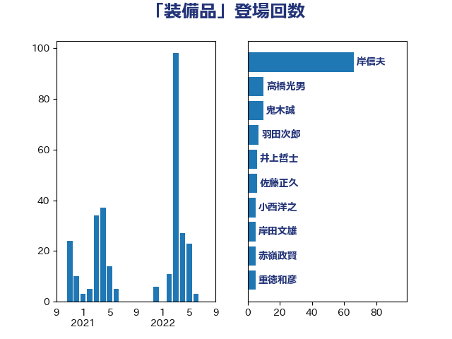

単語「装備品」

| 岸信夫 | 自由民主党 | 66 回 |
| 高橋光男 | 公明党 | 10 回 |
| 鬼木誠 | 立憲民主党 | 10 回 |
| 羽田次郎 | 立憲民主党 | 7 回 |
| 井上哲士 | 日本共産党 | 6 回 |
| 佐藤正久 | 自由民主党 | 6 回 |
| 小西洋之 | 立憲民主党 | 5 回 |
| 岸田文雄 | 自由民主党 | 5 回 |
| 赤嶺政賢 | 日本共産党 | 5 回 |
| 重徳和彦 | 立憲民主党 | 5 回 |
| 三浦信祐 | 公明党 | 4 回 |
| 中谷元 | 自由民主党 | 4 回 |
| 浦野靖人 | 日本維新の会 | 4 回 |
| 尾身朝子 | 自由民主党 | 3 回 |
| 松川るい | 自由民主党 | 3 回 |
| 林芳正 | 自由民主党 | 3 回 |
| 柿沢未途 | 無所属 | 3 回 |
| 佐藤啓 | 自由民主党 | 2 回 |
| 穀田恵二 | 日本共産党 | 2 回 |
| 鈴木敦 | 国民民主党 | 2 回 |
| 鈴木英敬 | 自由民主党 | 2 回 |
| 中曽根康隆 | 自由民主党 | 1 回 |
| 伊波洋一 | 無所属 | 1 回 |
| 宮崎政久 | 自由民主党 | 1 回 |
| 小田原潔 | 自由民主党 | 1 回 |
| 岩谷良平 | 日本維新の会 | 1 回 |
| 後藤祐一 | 立憲民主党 | 1 回 |
| 徳永久志 | 立憲民主党 | 1 回 |
| 斉藤鉄夫 | 公明党 | 1 回 |
| 斎藤アレックス | 国民民主党 | 1 回 |
| 松沢成文 | 日本維新の会 | 1 回 |
| 水岡俊一 | 立憲民主党 | 1 回 |
| 渡辺猛之 | 自由民主党 | 1 回 |
| 田島麻衣子 | 立憲民主党 | 1 回 |
| 田村智子 | 日本共産党 | 1 回 |
| 笠井亮 | 日本共産党 | 1 回 |
| 篠原豪 | 立憲民主党 | 1 回 |
| 茂木敏充 | 自由民主党 | 1 回 |
| 菅義偉 | 自由民主党 | 1 回 |
| 萩生田光一 | 自由民主党 | 1 回 |
| 赤羽一嘉 | 公明党 | 1 回 |
| 鈴木俊一 | 自由民主党 | 1 回 |
| 阿達雅志 | 自由民主党 | 1 回 |
| 麻生太郎 | 自由民主党 | 1 回 |